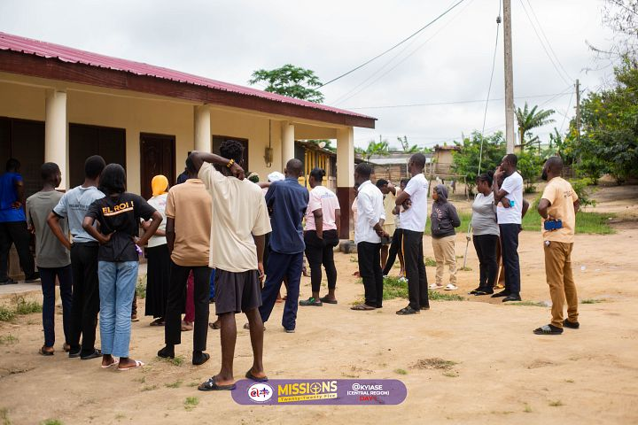

Discipleship, Prayer & Answers.
Whether you are searching for hope, prayer, direction, healing, or spiritual growth, Zoe Tirzah Missions exists to walk with you through every step of your journey with Jesus Christ.

I Need Prayer
Submit prayer requests and receive intercessory support from our devoted prayer warriors who care deeply about your spiritual wellbeing.
I Want to Grow
Build a deeper relationship with God through discipleship pathways, systematic Bible studies, and personal mentorship under church leadership.
I Want to Serve
Join our mission trips as a medical volunteer, teacher, driver, evangelist, or logistician transforming lives across Ghana.
I Need Community
Find genuine fellowship with Apostolic Zion Worship Centre believers who will encourage your Christian walk with wisdom and warmth.
“Draw near to God, and He will draw near to you.”
No matter where you are in life, God's grace is open and ready to restore, renew, and empower you.
Frequently Asked Questions
Clear, biblical answers regarding our missions, church governance, volunteer procedures, and donation security.